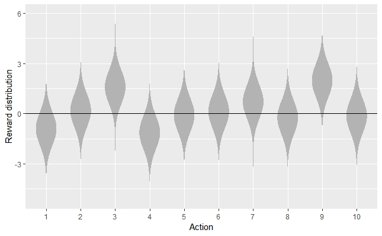
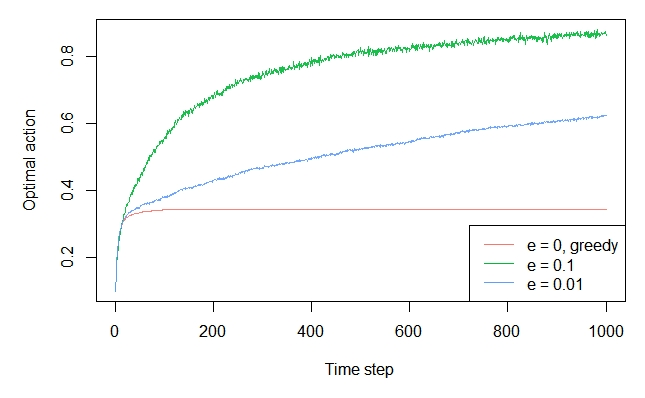
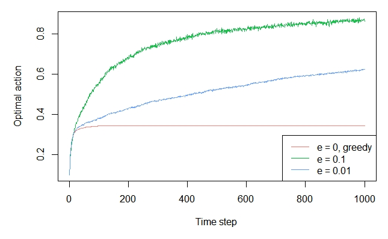
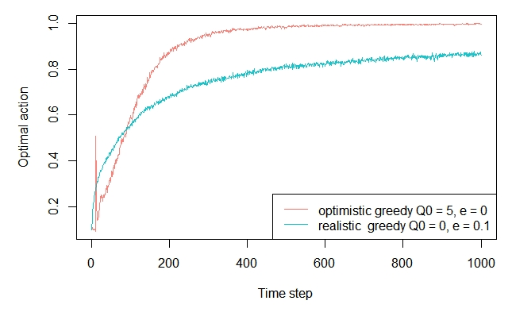
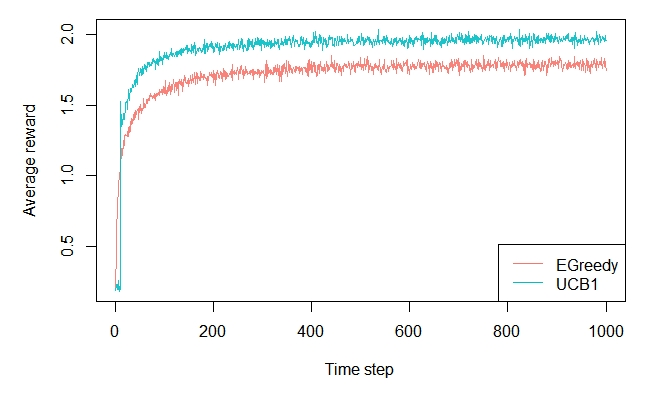

Demo: Replication Sutton & Barto, Reinforcement Learning: An Introduction, Chapter 2
Robin van Emden
2019-01-20
Source:vignettes/sutton_barto.Rmd
sutton_barto.RmdSimulation of the multi-armed Bandit examples in chapter 2 of “Reinforcement Learning: An Introduction” by Sutton and Barto, 2nd ed. (Version: 2018)
This book is available here: Sutton&Barto
2.3 The 10-armed Testbed
Generate the 10 arms.
library(contextual)
set.seed(2)
mus <- rnorm(10, 0, 1)
sigmas <- rep(1, 10)
bandit <- BasicGaussianBandit$new(mu_per_arm = mus, sigma_per_arm = sigmas)The violin plot
Install ggplot2 and ggnormalviolin libraries to be able to generate Figure 2.1.
install.packages("ggplot2")
devtools::install_github("wjschne/ggnormalviolin")
library(ggplot2)
library(ggnormalviolin)
print(ggplot(data = data.frame(dist_mean = mus, dist_sd = sigmas, dist = factor((1:10))),
aes(x = dist, mu = dist_mean, sigma = dist_sd)) + ylab("Reward distribution") +
geom_normalviolin() + theme(legend.position = "none") +
xlab("Action") + geom_hline(aes(yintercept = 0)))

The epsilon greedy plot
agents <- list(Agent$new(EpsilonGreedyPolicy$new(0), bandit, "e = 0, greedy"),
Agent$new(EpsilonGreedyPolicy$new(0.1), bandit, "e = 0.1"),
Agent$new(EpsilonGreedyPolicy$new(0.01), bandit, "e = 0.01"))
simulator <- Simulator$new(agents = agents, horizon = 1000, simulations = 2000)
history <- simulator$run()
plot(history, type = "average", regret = FALSE, lwd = 1, legend_position = "bottomright")
plot(history, type = "optimal", lwd = 1, legend_position = "bottomright") 

2.6 - Optimistic values
agents <- list(Agent$new(EpsilonGreedyPolicy$new(0), bandit,
"optimistic greedy Q0 = 5, e = 0"),
Agent$new(EpsilonGreedyPolicy$new(0.1), bandit,
"realistic greedy Q0 = 0, e = 0.1"))
agents[[1]]$policy$theta$mean <- as.list(rep(5,10))
agents[[1]]$policy$theta$n <- as.list(rep(5,10))
simulator <- Simulator$new(agents = agents, horizon = 1000, simulations = 2000)
history <- simulator$run()
plot(history, type = "optimal", lwd = 1, legend_position = "bottomright")

2.7 - Upper-Confidence-Bound Action Selection
agents <- list(Agent$new(EpsilonGreedyPolicy$new(0.1), bandit, "EGreedy"),
Agent$new(UCB1Policy$new(), bandit, "UCB1"))
simulator <- Simulator$new(agents = agents, horizon = 1000, simulations = 2000)
history <- simulator$run()
plot(history, type = "average", regret = FALSE, lwd = 1, legend_position = "bottomright")

2.8 - Gradient Bandit Algorithms
set.seed(2)
mus <- rnorm(10, 0, 1)
sigmas <- rep(1, 10)
bandit <- BasicGaussianBandit$new(mu_per_arm = mus, sigma_per_arm = sigmas,
mu_offset = 4)
agents <- list(Agent$new(GradientPolicy$new(0.1, TRUE), bandit,
"alpha = 0.1, with baseline"),
Agent$new(GradientPolicy$new(0.1, FALSE), bandit,
"alpha = 0.1, without baseline"),
Agent$new(GradientPolicy$new(0.4, TRUE), bandit,
"alpha = 0.4, with baseline"),
Agent$new(GradientPolicy$new(0.4, FALSE), bandit,
"alpha = 0.4, without baseline"))
simulator <- Simulator$new(agents = agents, horizon = 1000, simulations = 2000)
history <- simulator$run()
plot(history, type = "optimal", lwd = 1, legend_position = "bottomright",
color_step = 2, lty_step = 2)